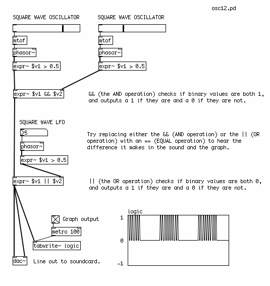

Square Waves and Logic
Let's look a little more closely at manipulating square waves with Low Frequency Oscillators and Logic Operations.
Pulse Width Modulation
We've already seen how a simple mathematical check ("is the value of this audio ramp greater than 0.5?") can be used to turn a Sawtooth wave into a Square wave. This produces a Square Wave which has a value of "1" half the time, and of "0" the other half of the time. This is called the Pulse Width of the Square Wave. Different Pulse Widths make a different sound. And when we use a Square Wave as an LFO (Low Frequency Oscillator), different Pulse Widths will have different effects on the sound it is modulating.
When the Square Wave is "1" half the time and "0" the other half, it is said that it has a Pulse Width of 50%. To change the Pulse Width, it is necessary to send a new number to replace the "0.5" in the [expr~] object. The [expr~] object currently has one Variable, which is written as $v1, and one constant, "0.5". If the constant is replaced with a second variable, $v2, then we can use a Number box to change the Pulse Width. Sending the number "0.25" will result in a Pulse Width of 25%, i.e. the Square Wave will be "1" a quarter of the time, and "0" three quarters of the time.

It is also possible to modulate the Pulse Width of the Square Wave with an LFO, which creates a unique sound. Instead of using a Number box, the output of a Sine Wave Oscillator is sent to an Absolute audio [abs~] object, which converts any negative values from the [osc~] into positive ones, and this stream of numbers is sent to the second inlet of the [expr~] object.

Math & Logic Operations
Once we are working with Square waves, whose value is either a "0" or a "1", then we can also use Logic operations to create patterns. Logic operations take as their inputs either a "0" or a "1" (and nothing in between!), and compare the two numbers, giving either a "0" or a "1" as an output.
The AND operation works like this:
0 AND 0 = 0 0 AND 1 = 0 1 AND 0 = 0 1 AND 1 = 1
In short, this means that the output is "1" only when both inputs are also "1", otherwise the output is "0". In Pd, this is represented by the && operation used in the Expression [expr] or Audio Expression [expr~] objects, i.e. [expr~ $v1 && $v2].
The OR operation works like this:
0 OR 0 = 0 0 OR 1 = 1 1 OR 0 = 1 1 OR 1 = 1
In short, this means that the output is "1" only when both inputs are also "0", otherwise the output is "0". In Pd, this is represented by the || operation used in the Expression [expr] or Audio Expression [expr~] objects, i.e. [expr~ $v1 || $v2].
And the EQUAL operation works like this:
0 EQUAL 0 = 1 0 EQUAL 1 = 0 1 EQUAL 0 = 0 1 EQUAL 1 = 1
In short, this means that the output is "1" only when both inputs are the same, otherwise the output is "0". In Pd, this is represented by the = operation used in the Expression [expr] or Audio Expression [expr~] objects, i.e. [expr~ $v1 = $v2].
In the following patch, different logic operations are used to make patterns from two Square Wave Oscillators, which are then compared with a final Square Wave Low Frequency Oscillator. What you will hear is a pattern of Square Waves which are switched on and off by each other. The final LFO makes a recognizable rhythm in the sound.

Try replacing any of the && (AND) or || (OR) operations in the [expr~] objects with an == (EQUAL) operation to hear the difference it makes in the sound. Or add further Logic operations to the output of the LFO to make more complex rhythmic patterns. You can also experiment with changing the Pulse Width as described in the previous patches.